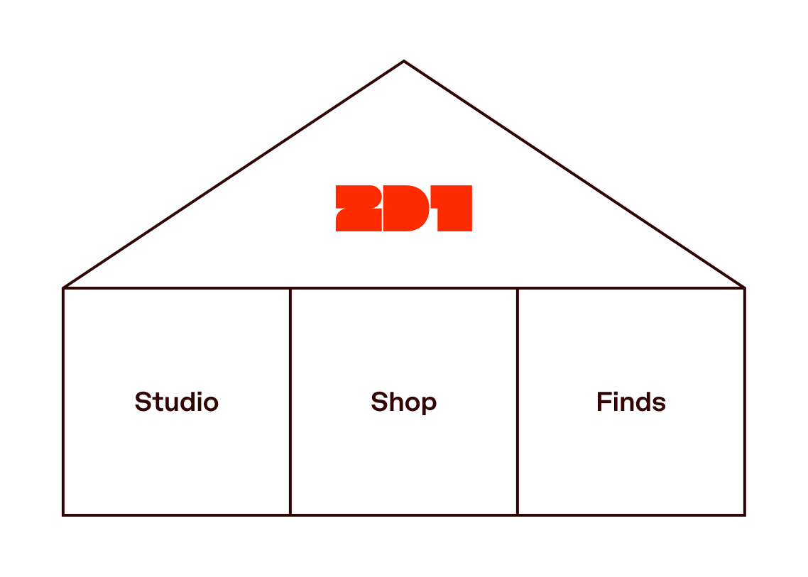

デザインハウス、2D1について
クライアントワーク、自分でつくるもの、何度も気になってしまうもの。
2D1は、私、二日一宏祐による独立したデザインプラクティスです。クライアントと仕事をする、自分のものをつくる、Familiar Charactersだと感じる日用品を集めて紹介する。そのための場所を、デザインハウスと捉えています。スタジオ、ショップ、キュレーションという3つの形をとっていますが、どれも身の回りに置くものにこだわってしまう、同じ習慣から生まれています。

ものを見る目
8歳の頃、好きな服のブランドがあって、着るものはほとんどそこで揃えたいと思っていました。母にお店へ連れて行ってもらうと、自分で服を選び、一人で試着して、気に入らなかったものはきちんと畳んで、試着室のカーテンの下から渡していました。小さな「これは違う」の山。見た目も、触った感じも、自分の空間にどう収まるかも、いつも気になっていました。
その関心から、サイモンフレーザー大学のSchool of Interactive Arts & Technologyで、ユーザー体験のデザインを中心に学びました。2018年に参加したitaliaDesignのフィールドスクールでは、デザインに対する見方が広がりました。インタビューしたイタリアのデザイナーたちは、デザインを姿勢や、ものの見方、生き方として語っていました。それは、北米で触れてきた、職業としてのデザインを重視する考え方とは違って感じられました。専門外の分野でも、何がそのデザインをよくしているのかを見つけられるようになり、仕事の枠を超えた活動を想像するきっかけにもなりました。
ものを見るのと同じくらい、自分で何かをつくることにも、ずっと興味がありました。子どもの頃は、便利グッズのアイデアを母に話していました。小学6年生の卒業文集に書いた将来の夢は「発明家」。大学卒業後は、創業間もないスタートアップに、最初の社員兼創業デザイナーとして入りました。共同創業者たちが好きで、挑戦にもワクワクしていましたが、いつか自分で会社を始めたくなったときのために、そのつくり方を学びたい気持ちもありました。
その後もテック系のスタートアップで働き、2023年にTakram Tokyoに入りました。大きな企業や組織のデジタル体験を手がけながら、画面の外にも活動が広がるデザイナーたちと一緒に働いています。グラフィックデザイナーが印刷物をつくり、インダストリアルデザイナーが実物の試作品をつくる様子を見て、日用品をデザインすることが、自分にも手の届くものに感じられるようになりました。必要なことを学び、自分にない知識を持つ人と組めば、自分も挑戦できるのでは、と思うようになったんです。
やりたいことの余地
それでも2D1を最初に考えたときは、すでにできることを軸に、クライアントワークをするスタジオを想定していました。自然な選択でしたが、空想の中で思い描いていたものとは、少し違いました。社員としての仕事では追いかけられなかった関心にも、取り組める余地がほしかった。日用品をつくることにはずっと憧れていたのに、形のあるものをデザインしてきた経験がないからと、夢のままにしていました。結局、自分で自分の枠を決めていたんだと認めることになりました。
クライアントワークは好きです。自分で何かを始める人をすごく尊敬していますし、その人が信じるものを一緒につくるのは楽しい。でも、自分のアイデアも形にしたい。靴べらをデザインしたい、というような、小さくてもずっと消えない思いも含めて。デザインハウスという形なら、その両方と、日々出会うものにも、居場所をつくれると思いました。
Familiar Characters
ものを、一緒に暮らす仲間のように感じることがあります。同じ家にいて、日々の習慣に加わり、それぞれの形で馴染んでいく。はっきりした視点を持つ、よくできたものには、魂があるようにも感じます。惹かれるのは、一見なんでもないものが、誰かにとってはとても大切になること。つい手に取るマグカップ、手にしっくりくるペン、出かける前に使う靴べら。最初は、プロポーションや色、少し笑顔になるようなディテールに目が留まったのかもしれません。でも使い続けるのは、使い勝手がよくて、自分の暮らしに合っているから。使ううちに、傷や習慣、思い出が重なっていきます。
個性のあるものが、やがて暮らしの登場人物になっていく。Familiar Charactersには、そんな意味を込めています。もののまわりで日々が積み重なることで、そのものに意味が生まれる。自分がつくるものにも、そうなる機会があってほしいと思っています。
引き算とウィット
その視点は、ものをつくるときにも、クライアントとブランドやデジタルプロダクトをつくるときにも、デザインの軸になっています。自分のアプローチを引き算とウィットと呼んでいます。核となるアイデアを見つけ、邪魔するものを取り除き、個性を生むディテールを残す。インターフェースなら、次に何をすればいいかがわかること。そして言葉や見た目、動きを通して、ブランドらしさが伝わること。アイデンティティなら、その会社だとわかる顔があること。どちらでも、きちんと機能して、そのものらしくあることを目指しています。
スタジオでは、何を実現したいのか、何がその妨げになっているのかを知るところから始めます。創業者や小さな事業を営む人たちと、その理解をビジュアルアイデンティティやウェブサイト、デジタルプロダクトにしていきます。必要な仕事を一緒に考え、最初のアイデアからデザインの完成まで関わることも、必要な部分に絞って力になることもできます。
自分でつくるもの、紹介したいもの
ショップでは、同じ問いを自分のペースで追いかけられます。日用品を見て、形や素材、使い方がもう少し違ったら、と思うことがあります。自分ならどう解釈するだろうと考え始めると、つくってみたくなる。最初につくっているのは、キャンバストートのToday Bagです。開き方から中のつくりまで、ありふれたものにも、こだわりたい判断がたくさんあります。
ほかの人がつくったものをよく見ることも、その過程の一部です。Familiar Charactersのコレクションでは、はっきりした視点と、少しのウィットを感じる日用品を選んでいます。個人的には、載せているものを全部持っていたい。それらを紹介することは、ものそのものを通して、自分がデザインで大切にしていることを伝える方法でもあります。
気に留めることが、何かをつくることにつながる。クライアントのためにも、日々の暮らしのためにも。そんな場所を、2D1というハウスにしていきたいと思っています。一緒につくってみたいものがあれば、ぜひ聞かせてください。